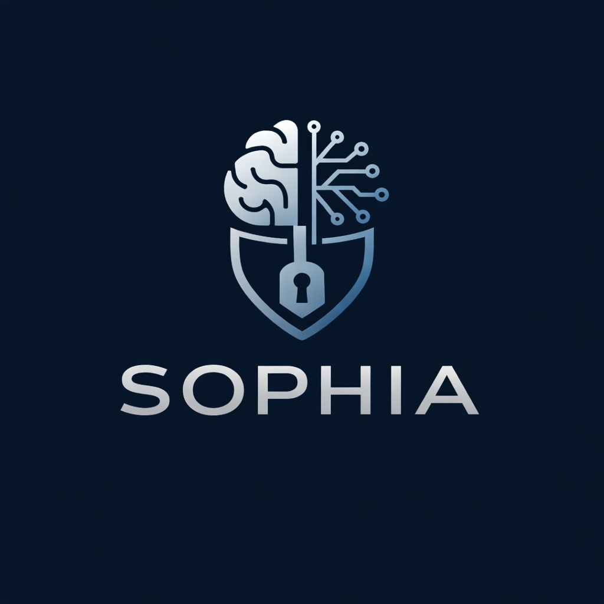

Orchestration
SOPHIA treats AI as infrastructure: projects, tasks, workspaces, context and memory are structured explicitly rather than improvised around a chat interface.
Sovereign Orchestrator Platform for Holistic Intelligence Architecture.
An open architecture for building sovereign, secure and auditable AI systems.
SOPHIA explores how artificial intelligence systems can be deployed in controlled infrastructures using open technologies, local models and secure information pipelines.

Artificial intelligence adoption raises several structural risks: dependency on proprietary platforms, information leakage, unreliable knowledge ingestion, weak governance and unstable context management.
SOPHIA treats AI as infrastructure: projects, tasks, workspaces, context and memory are structured explicitly rather than improvised around a chat interface.
The architecture integrates Zero Trust principles, controlled external acquisition, semantic validation and strong separation between internal services and external information flows.
SOPHIA does not try to replace existing tools. It assembles open-source components into a coherent, auditable and reproducible architecture.
SOPHIA follows a Hub & Spoke architecture: a central orchestration layer coordinates memory, inference, tooling, external knowledge acquisition and isolated execution environments.
Users / IDE / API
│
▼
WireGuard Access
│
▼
+----------------------------+
| sophia-core |
| Orchestrator / LiteLLM |
+-------------+--------------+
│
┌──────────┼───────────┬──────────────┬──────────────┐
▼ ▼ ▼ ▼ ▼
sophia- sophia- sophia- sophia- sophia-
inference memory skills dmz sandbox
models Qdrant MCP tools web intake workspaces
│ │
▼ ▼
knowledge semantic validation
│ │
└──────────────┬──────────┘
▼
persistent memory
sophia-git (Forgejo) centralizes:
- sophia-brain
- Guesdon-Brain
- project repositories
The current proof of concept is based on a pragmatic open-source stack.
SOPHIA is an experimental architecture project. The proof of concept infrastructure is deployed, the documentation is being published, and the platform model is progressively being stabilized.
SOPHIA is initiated by Damien Guesdon as an architectural exploration: how can organizations use artificial intelligence without losing control over their information systems?
The project builds on 20+ years of experience in infrastructure, networking and systems, extended by a current specialization in AI engineering, sovereign AI architecture and secure orchestration.
Damien Guesdon is also the author of SophIA — Assistant suprême ?, a book exploring the real nature of artificial intelligence, the limits of generative models, and the architectural foundations required to build sovereign, secure and auditable AI systems.
The project is still under active construction, but its documentation, concepts and public repository are already available.
SophIA — Assistant suprême ? is Damien Guesdon’s book on the real nature of artificial intelligence, the limits of large language models, and the engineering principles required to build sovereign AI systems.
Currently available in French only.
It explores hallucinations, model collapse, data leakage, prompt injection, orchestration, RAG, secure execution, Zero Trust and the architectural vision that led to SOPHIA.